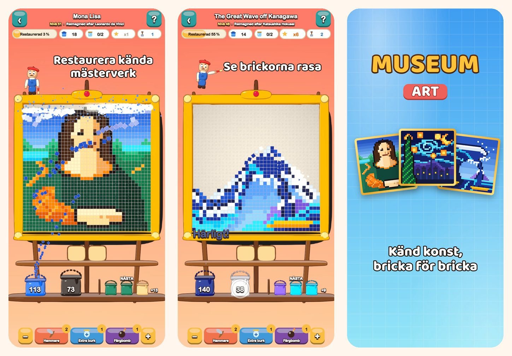

Museum Art
Färgpussel i pixelkonst
Tryck på en färg och se brickorna rasa. Restaurera 51 bilder i pixelkonst, från Mona Lisa till Istanbul, Paris, Rom och New York.
Hämta i App Store
Om spelet
Varje bild i Museum Art består av färgglada, fyrkantiga brickor. Ta bort dem en färg i taget och se bilden glänsa igen.
SÅ SPELAR DU
- Tryck på en färgyta som når nedersta raden, eller på en hink på hyllan: brickorna flyger till sin hink.
- Brickorna ovanför glider ner som sand och öppnar nya drag.
- Ingen hink för en färg än? Ställ den i en burk på brickan för väntande färger.
- Använd brickan mindre så får du fler stjärnor.
51 BILDER ATT RESTAURERA
- Ljusa, enkla motiv att börja med: en luftballong, en segelbåt, en katt och en fyr.
- Natur: snöklädda toppar, en fjällsjö, körsbärsblommor och en öken i skymningen.
- En världsresa genom Istanbul, Paris, Rom och New York.
- Mästarnas valv: Den stora vågen, Stjärnenatten, Näckrosor, Mjölkpigan, Impression, soluppgång och Mona Lisa, nytolkade i pixelkonst.
AVSLAPPNAT OCH SCHYSST
- Varje nivå går att klara utan boosters, och ett nytt försök är gratis.
- Boosters för kluriga lägen: Hammare, Extraburk och Färgbomb.
- Zooma in på detaljerna när du vill.
- En rolig fakta om varje bild.
- Spela på 19 språk.